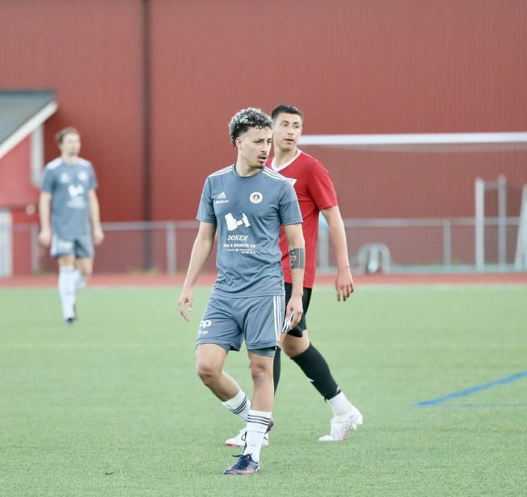
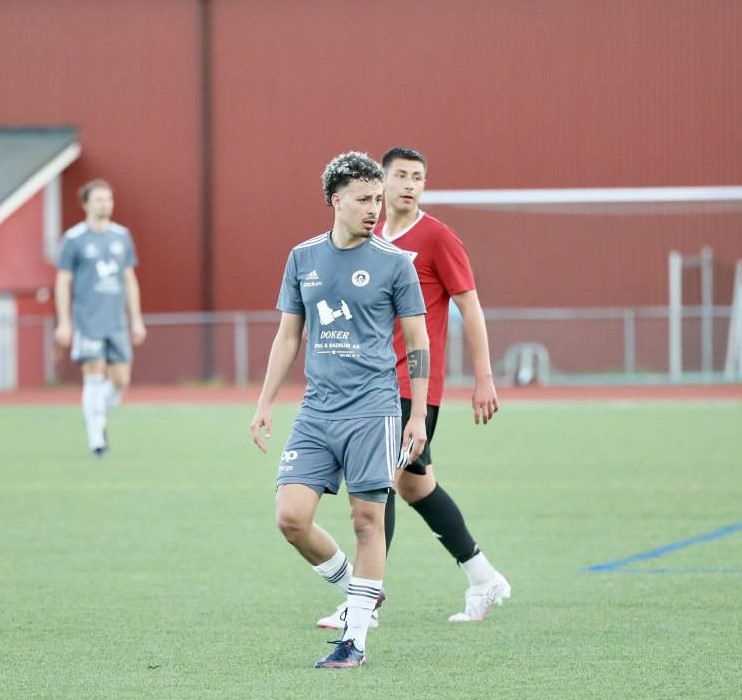

Projects:
The three main projects that Sabatini was involved through out his first year as a Frontend Developer at Noroff.

Edugate
Result management system to schools expecially high school
HTML/Tailwind CSS
Github Repository
Owned by Noroff

 
